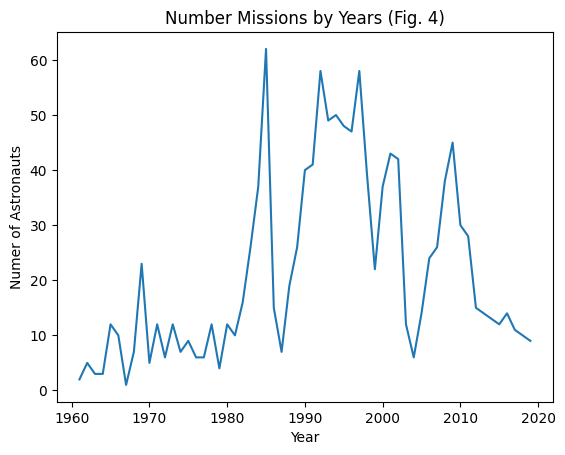

import requests
from bs4 import BeautifulSoup
import pandas as pd
import numpy as np
import matplotlib.pyplot as plt
def pdcorgis(name):
name = name.lower()
url = "https://corgis-edu.github.io/corgis/csv/" + name + "/"
response = requests.get(url)
soup = BeautifulSoup(response.text, 'html.parser')
a_tags = soup.find_all('a')
a_href = ''
for a_tag in a_tags:
if a_tag.has_attr('download'):
a_href = a_tag['href']
dl_url = "https://corgis-edu.github.io/corgis/csv/" + name + "/" + a_href
df = pd.read_csv(dl_url)
return dfThe Final Frontier: A Data-Driven Journey Through Space Exploration
By: Francis Feng
20 March 2023
Introduction
Dataset Link: https://corgis-edu.github.io/corgis/csv/astronauts/
The dataset above is created with publicly available data from NASA and includes all of the space missions before 15 January 2020. The dataset focuses on both the astronauts themselves such as full astronaut name, sex, date of birth, nationality, military status, a title and year of a selection program. In addition to information regarding the astronauts, the dataset also includes details of the mission with metrics such as duration of the mission and extravehicular activity.
As someone with a passion for space exploration, this dataset from CORGIS immediately captured my attention as I found it extremely intriguing. The dataset itself also provides a considerable amount of information that will prove to be valuable in my analysis.
I hope to dive deeper into the following analysis questions: - How has space exploration advanced in the past decades? - How has the demographic of astronauts changed over time? - What does this dataset reveal about the space race?
Methods
The first step to dataset analysis is getting the dataset. I have decided to write a function called pdcorgis that will take in a name of a CORGIS dataset and return the data frame that corresponds to the desired dataset. To create this function, we will be importing the requests library which will help us get responses when passed in an URL. Next, we will important the BeautifulSoup library so that we can easily parse through the HTML tags on the website that the CORGIS dataset is hosted.
Results
The line graph below shows a general trend of the number of astronauts worldwide over time. First of all, we have to create a new data frame that only consists of the mission year and the count of astronauts worldwide. Next, we need to group the data frame by the mission year so that there is only one data point per year. Since there are often multiple missions every year, we can take the median value of the count of astronauts worldwide for each year. Since the units for human beings are in whole numbers and the median can sometimes return to be decimals, we are going to apply a floor function to all of our data points. Lastly, we can plot the cleaned up data frame.
Through inspection, we can see that there is a general up trend for the number of astronauts worldwide which corresponds to the real world intuitions since new astronauts are being trained every day. Hence, the number of astronauts going into space each year would naturally increase with occasionally dips when older astronauts retire.
df_years = df[['Mission.Year', 'Profile.Astronaut Numbers.Overall']]
df_years = df_years.groupby('Mission.Year').agg({'Profile.Astronaut Numbers.Overall': 'median'})
df_years['Profile.Astronaut Numbers.Overall'] = df_years['Profile.Astronaut Numbers.Overall'].apply(np.floor)
lines = df_years.plot.line(title='Number of Astronauts Worldwide Over Time (Fig. 1)', xlabel='Year', ylabel='Numer of Astronauts')The following bar graph displays the total number of male versus female astronauts who has accomplished space missions. The number of male astronauts is more than 5 times that of the number of female astronauts who has gone into space. This visualization supports the historical accurate narrative that space exploration is a male dominated field and the bias towards female astronauts is prevalent especially in the earlier stages of space travel.
counts = df['Profile.Gender'].value_counts()
fig, ax = plt.subplots()
counts.plot(kind='bar', ax=ax, color=['skyblue', 'tomato'])
ax.set_xlabel('Gender')
ax.set_ylabel('Number of Astronauts')
ax.set_title('Number of Astronauts by Gender (Fig. 2)')
plt.show()Below is a bar graph listing all of the countries that have successfully operated missions into space and the number of missions that they have accomplished. Sitting at over 800, the United States has the most number of completed missions by far. This is followed by the U.S.S.R./Russia with a little under 300. The rest of the countries pale in comparison in terms of the number of space missions completed. The United States and U.S.S.R.’s dominance over space exploration could be explained by the space race in the 20th century during the height of the cold war. The geopolitical conflict fueled much of the space missions that we see here in this graph.
counts = df['Profile.Nationality'].value_counts()
fig, ax = plt.subplots()
counts.plot(kind='bar', ax=ax)
ax.set_xlabel('Nationality')
ax.set_ylabel('Number of Astronauts')
ax.set_title('Number of Astronauts by Nationality (Fig. 3)')
plt.show()
This line graph depicts the number of astronauts that were sent into space each year. During the years between 1990 and 2000, there were consistently a large amount of space missions. In the recent decade, the number of space missions has drastically decreased.
counts = df['Mission.Year'].value_counts()
counts.sort_index(axis=0, inplace= True)
fig, ax = plt.subplots()
lines = counts.plot.line(title='Number Missions by Years (Fig. 4)', xlabel='Year', ylabel='Numer of Astronauts')
Shown below is a line graph of the maximum mission duration by years to see if space missions have gotten longer over time. Indeed, the duration of space missions has shown an increase over the years, going from the first ever space mission that last 1 hour by Yuri Gagarin to more recent space missions that last over 10,000 hours. This drastic difference between mankind’s first venture into space to more frequent space missions can be attributed to the development of space travel. As technology advance and we push the boundaries of human knowledge, we discover new ways to fly higher, faster, and farther.
df_years2 = df[['Mission.Year', 'Mission.Durations.Mission duration']]
df_years2 = df_years2.groupby('Mission.Year').agg({'Mission.Durations.Mission duration': 'max'}).reset_index()
plt.scatter(df_years2['Mission.Year'], df_years2['Mission.Durations.Mission duration'])
coeffs = np.polyfit(df_years2['Mission.Year'], df_years2['Mission.Durations.Mission duration'], 4)
poly_func = np.poly1d(coeffs)
x_range = np.linspace(df_years2['Mission.Year'].min(), df_years2['Mission.Year'].max(), 100)
plt.plot(x_range, poly_func(x_range), color='r')
plt.title('Duration of Missions Over Time (Fig. 5)')
plt.xlabel('Years')
plt.ylabel('Hours')
plt.show()In addition to exploring general mission duration, I decided to dive in further into extravehicular activity (EVA) duration by years to see if EVA has gotten longer over time. The visualization shows that EVA durations has gone from impossible, at the time of the first space mission, to a peak of over 80 hours in more recent decades. EVA is any activity done by an astronaut outside of the spacecraft. The most famous example being the first moon landing by Neil Armstrong. EVA is extremely important for conducting complex work outside the pressurized space that a vehicle provides. The harsh environment of space proves to be greatly hostile to the human body. Although it is difficult to plan and perform EVA, it is invaluable to scientific research since some data can only be gathered through EVA. The upwards trend of EVA duration supports the advancement of space exploration as EVA is extraordinarily dangerous and requires cutting-edge technology to carry out reliably and safely.
df_years3 = df[['Mission.Year', 'Mission.Durations.EVA duration']]
df_years3 = df_years3.groupby('Mission.Year').agg({'Mission.Durations.EVA duration': 'max'}).reset_index()
plt.scatter(df_years3['Mission.Year'], df_years3['Mission.Durations.EVA duration'])
coeffs = np.polyfit(df_years3['Mission.Year'], df_years3['Mission.Durations.EVA duration'], 1)
poly_func = np.poly1d(coeffs)
x_range = np.linspace(df_years3['Mission.Year'].min(), df_years3['Mission.Year'].max(), 100)
plt.plot(x_range, poly_func(x_range), color='r')
plt.title('Duration of EVA Missions Over Time (Fig. 6)')
plt.xlabel('Years')
plt.ylabel('Hours')
plt.show()
The following line graph contains two lines, one for the number of male astronauts and another for female astronauts. We can see that there are very few female astronauts until the mid-1980’s. The trends shown in this line graph supports the bar graph of the number of astronauts by gender as the number of male astronauts has consistently been much higher than the number of female astronauts every single year.
df_male = df[df['Profile.Gender'] == 'male']
df_male = df_male.groupby('Mission.Year').size()
df_female = df[df['Profile.Gender'] == 'female']
df_female = df_female.groupby('Mission.Year').size()
lines = df_male.plot.line(title='Number of Astronauts By Gender (Fig. 7)', ylabel='Number of Astronauts')
lines = df_female.plot.line(xlabel='Year', color='red')
legend = plt.legend(['Male','Female'], loc='upper left')This line graph depicts the struggle between the US and the USSR in their fight for dominance in space exploration during the cold war era. The space race was a competition between the United States and the Soviet Union during the Cold War to explore space and demonstrate technological superiority. It began in 1957 with the Soviet Union’s launch of Sputnik, the first artificial satellite, and ended in 1975 with the joint Apollo-Soyuz Test Project. This can be demonstrated by the number of space missions between the 1960’s to the 1980’s which saw the two countries closely matching each other in the number of astronauts sent into space. The competition also spurred the development of new technologies and scientific breakthroughs, as well as significant political and cultural impacts.
df_ussr = df[df['Profile.Nationality'] == 'U.S.S.R/Russia']
df_ussr = df_ussr.groupby('Mission.Year').size()
df_us = df[df['Profile.Nationality'] == 'U.S.']
df_us = df_us.groupby('Mission.Year').size()
lines = df_us.plot.line(title='Number of Astronauts U.S. vs. U.S.S.R/Russia (Fig. 8)', ylabel='Number of Astronauts')
lines = df_ussr.plot.line(xlabel='Year', color='red')
legend = plt.legend(['U.S.','U.S.S.R/Russia'], loc='upper left')Discussion
Through the dissection of the data visualizations, we can conclude that there is a continual advancement in space exploration over the past decades. Many of the graphs point to a steady up trend in terms of the number of space missions conducted (Fig. 1 and 4) and the extension of mission durations (Fig. 5 and 6). The number of missions performed shows that governments and private corporations around the world still have a continuous interest in space exploration and are willing to fund such operations. The longer missions, from merely one hour to over ten thousand hours clearly show the advancement of technology in space travel that allows human beings to be in space for longer.
In Fig. 5, the 4th degree polynomial fit shows that there was a space boom from the 1960’s to the 1990’s where the mission duration dramatically increased each year. From 1990’s to the 2010’s, the mission duration peaked and slowed back down. After 2010’s to the present, the duration of space missions is again rapidly picking up speed with an extremely fast upward slope into the future. The exponential growth in mission duration supports the argument that space travel is improving since it requires great technological advancements in order to conduct space missions that are over ten thousand hours long. Furthermore, Fig. 6 shows the duration of EVA missions and the increase in duration of EVA missions represents an important step forward in our ability to explore and understand space, as well as in our ability to sustain human life in the hostile environment of space. The growth of EVA mission durations seems to be more linear when compared to the regular space mission duration which makes sense since EVA poses several difficulties that make it harder to conduct than normal missions. For example, the lack of gravity, harsh environment of space, and technical demands make EVA extremely hard. Astronauts must wear specialized spacesuits to protect themselves, but this also adds extra weight and bulk, making movement and dexterity difficult. Despite these challenges, EVA is critical for scientific research, spacecraft maintenance, and human exploration of space.
The gender demographic of astronauts has changed significantly over time. According to Fig. 7, all the astronauts in the early years of space exploration were male. Since then, there has been a gradual increase in the number of women selected as astronauts. In recent years, there has been a conscious effort to increase diversity in the astronaut corps as seen in the slow increase in women astronauts each year. Although there are active efforts to create a more gender diverse demographic, there is still plenty more work to do as shown by the clear discrepancy of new male versus female astronauts.
In addition to the advancements in space exploration and the evolution in gender diversity, this dataset also reveals trends in the space race between the U.S. and the U.S.S.R./Russia. The data exploration section shows that the USSR launched the first human, Yuri Gagarin, into space in 1961, beating the US to this milestone. However, upon examining Fig. 8, we can see that the US made significant strides in the 1960s and 1970s, including landing astronauts on the Moon as part of the Apollo program.
The dataset also highlights the relative sizes and capabilities of the space agencies of the two nations. During the Cold War era, the Soviet Union had a larger and more well-established space program than the U.S., with a greater number and a longer record of manned spaceflights. However, America ultimately overtook the Soviet Union in the race to the Moon and continued to consistently conduct more space missions in the years after the Cold War.
Overall, the Astronauts CORGIS dataset provides a valuable resource for exploring the history and achievements of human spaceflight, the gender gap in space exploration, and can shed light on the relative successes experienced by the US and the USSR during the space race.